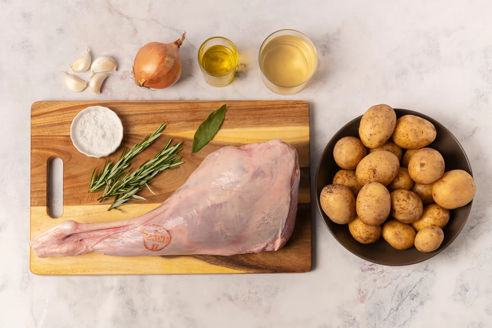
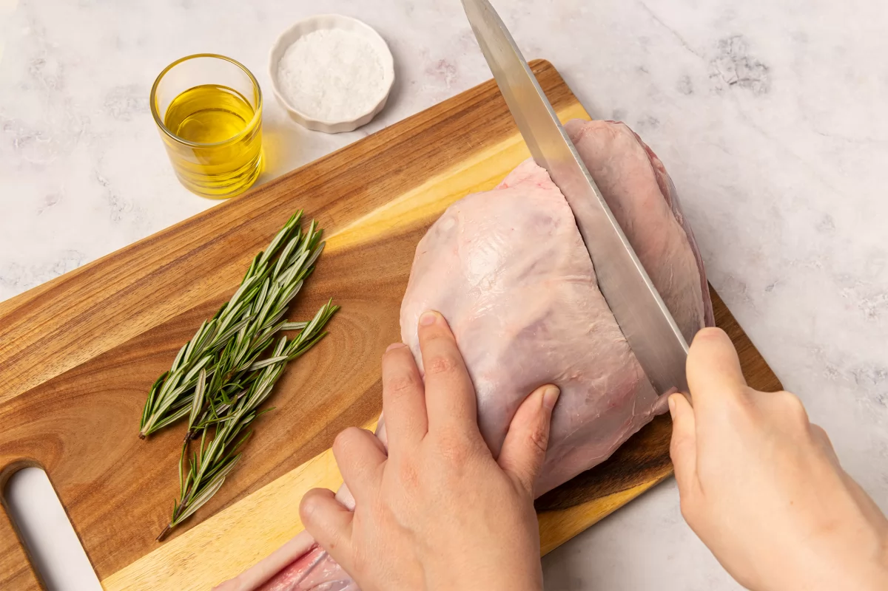
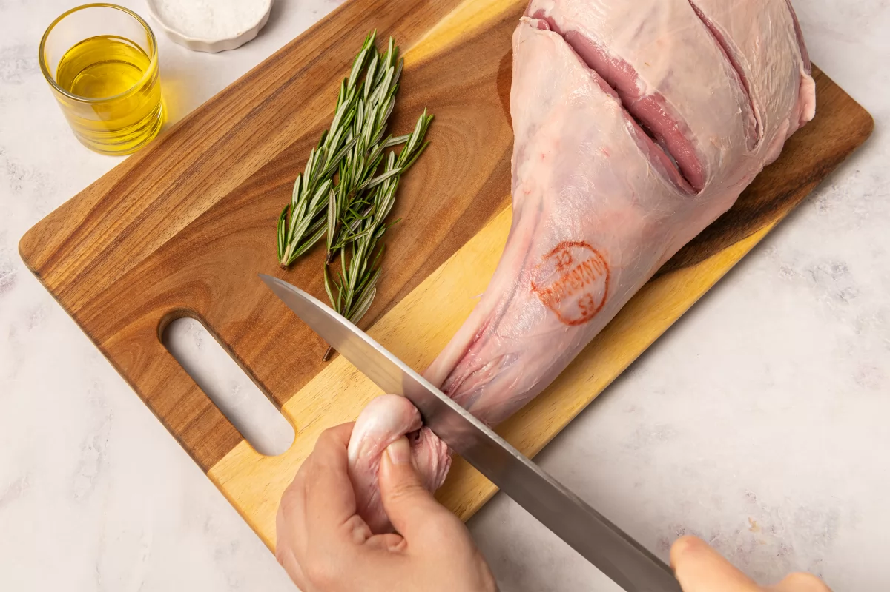
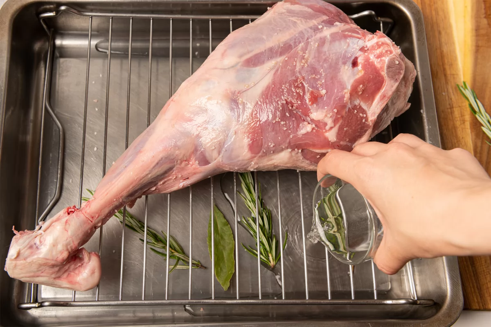
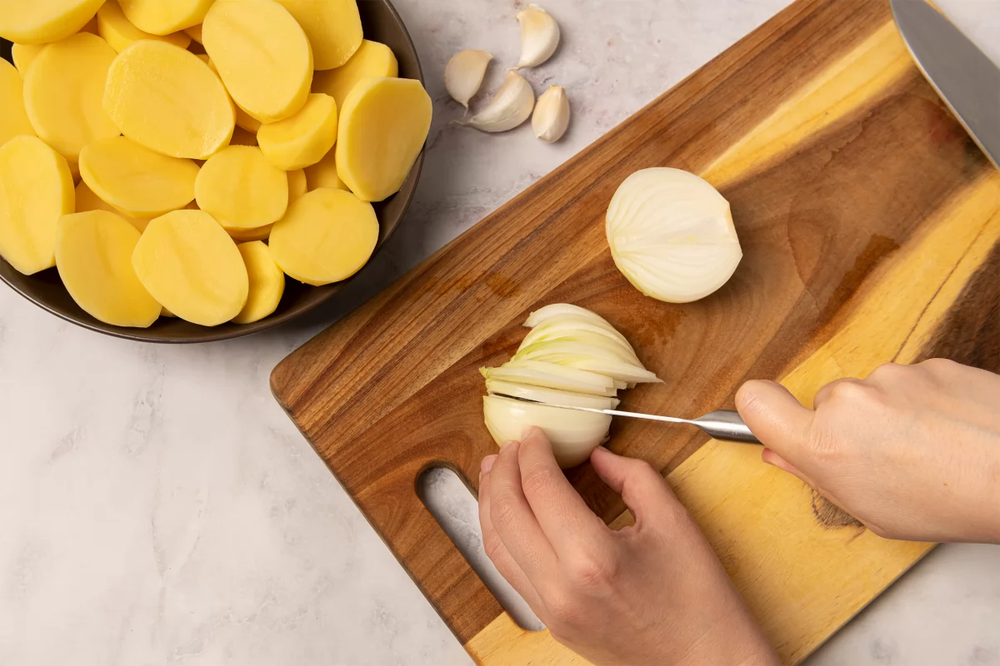
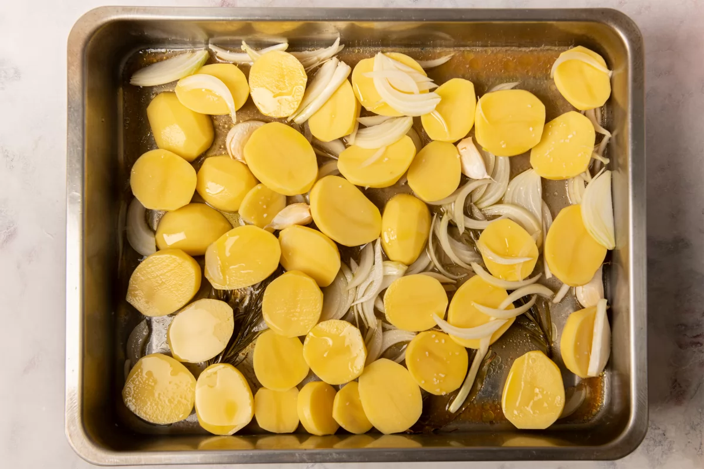
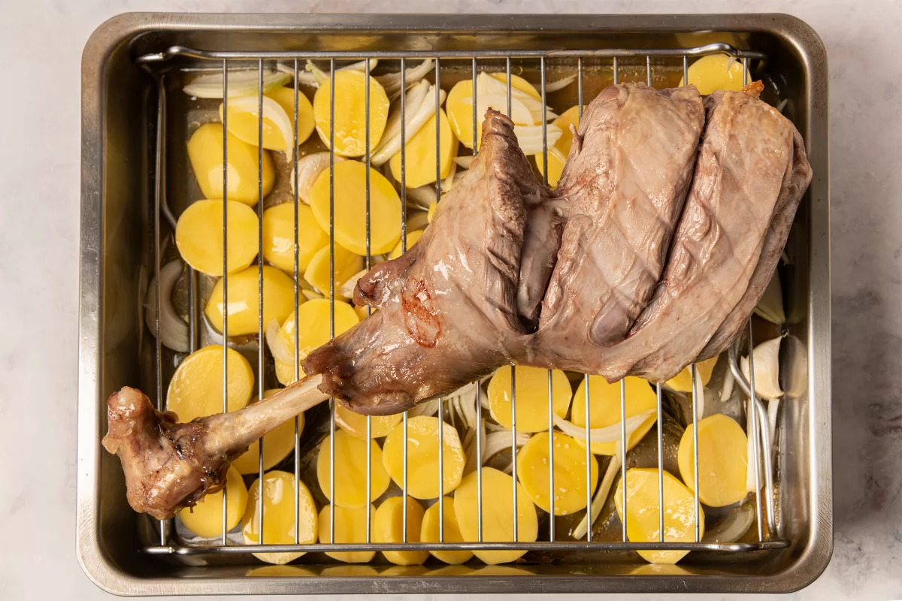

Primer paso:Precalentamos el horno a tope de potencia, con calor arriba y abajo. Mientras se calienta, preparamos la pierna de cordero de 250 g para asarla: le practicamos 2 cortes perpendiculares al hueso para facilitar su cocción.

Segundo paso:También cortamos los tendones inferiores, para que la carne no se desgarre al retraerse durante el horneado y la presentación quede más atractiva.
Tercer paso:Untamos la pierna con unos 30 mmg de aceite de oliva virgen extra y un puñadito de sal gruesa. La ponemos en una fuente de horno con la piel hacia abajo, preferiblemente sobre una rejilla para que no esté en contacto con la humedad. En la parte de abajo, ponemos 1 vaso de agua, 1 hoja de laurel y 1 ramita de romero fresco. Introducimos la carne en la parte baja del horno, bajamos la temperatura a 180 ºC y cocinamos durante 20 minutos.
Cuarto paso:Mientras, preparamos la guarnición: pelamos y cortamos por la mitad (o en cuartos si son grandes) 300g de patatas. Pelamos y cortamos en juliana media cebolla. Aplastamos ligeramente con el cuchillo el diente de ajo con su piel.
Quinto paso:Pasados los primeros 20 minutos de cocción, sacamos la fuente del horno. El cordero ya habrá empezado a tomar color y a desprender jugos sobre la bandeja inferior.
Sexto paso:Repartimos en la parte de abajo de la fuente las patatas, la cebolla y el ajo con sal, un chorrito de aceite de oliva virgen extra y 150 ml de vino blanco.
Septimo paso:Volvemos a colocar la pierna sobre la rejilla, esta vez con la piel hacia arriba. Introducimos de nuevo en el horno y continuamos la cocción a 180 ºC durante 1 hora, regando la pierna con el líquido de la bandeja cada 20 minutos.

Octavo paso:Pasado el tiempo de horneado, comprobamos el punto de la carne pinchándola con un palillo y observando que este se introduzca con facilidad y el jugo que expulsa sea transparente. Constatamos también que las patatas estén bien cocinadas.
Noveno paso:Para finalizar, podemos subir la temperatura del grill los últimos 10 minutos para darle un punto más tostado a la piel del cordero. Una vez obtenido este hermoso color dorado y textura crujiente, sacamos la bandeja del horno y disponemos las patatas con su salsa sobre una fuente de servir y encima la pierna de cordero.
